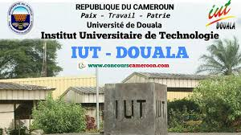
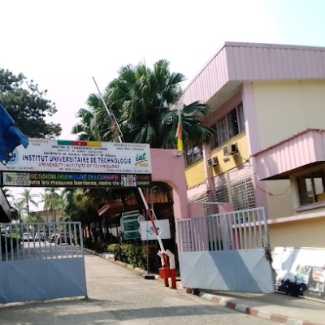
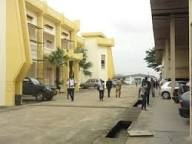
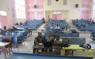
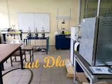
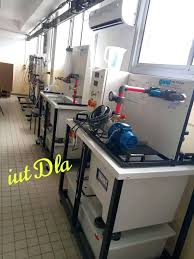

Presentation de l'institut universitaire de technologie de douala





L'iut de douala a été creer en 1993 suite a la reforme universitaire camerounaise par l'arreté présidentiel N°008/CAB/PR du 19 janvier 1993.
Son objectif principal est de former des techniciens supérieurs et des professionnels adaptés au marché de l'emploi.
Situé a ndogbong/campus 2 dans la ville de douala, il a pour mission de :
• Former des techniciens supérieurs
• Developper des compétences professionnelles
• Favoriser l'innovation technologique
• Preparer les étudiants a l'insertion professionnelle
Filieres industrielles :
Filieres numeriques :
BTS : 2 ans
Licence technologique : 1 ans apres DUT/BTS
DUT et LICENCE : admission par concours
BTS : admission par etude de dossier
Diplômes acceptés : Baccalauréat, GCE Advanced Level
Infrastructures : L'iut possede des laboratoires informatiques, ateliers industriels, bibliotheque physique et numerique, salles specialisees, equipements techniques modernes.
L'iut collabore avec plusieurs entreprises :